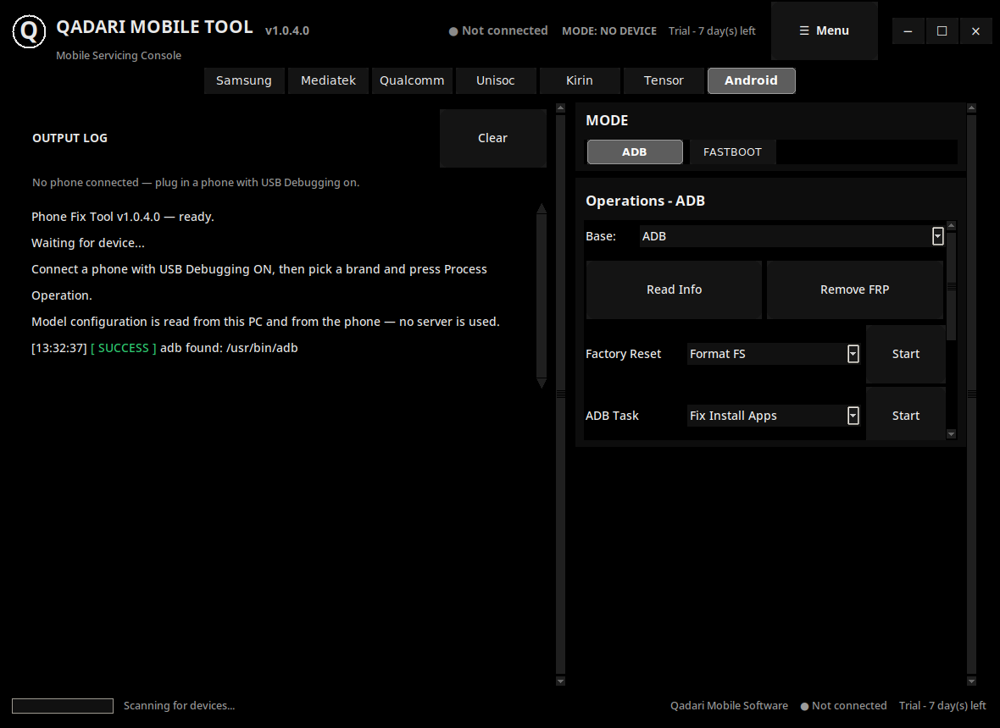
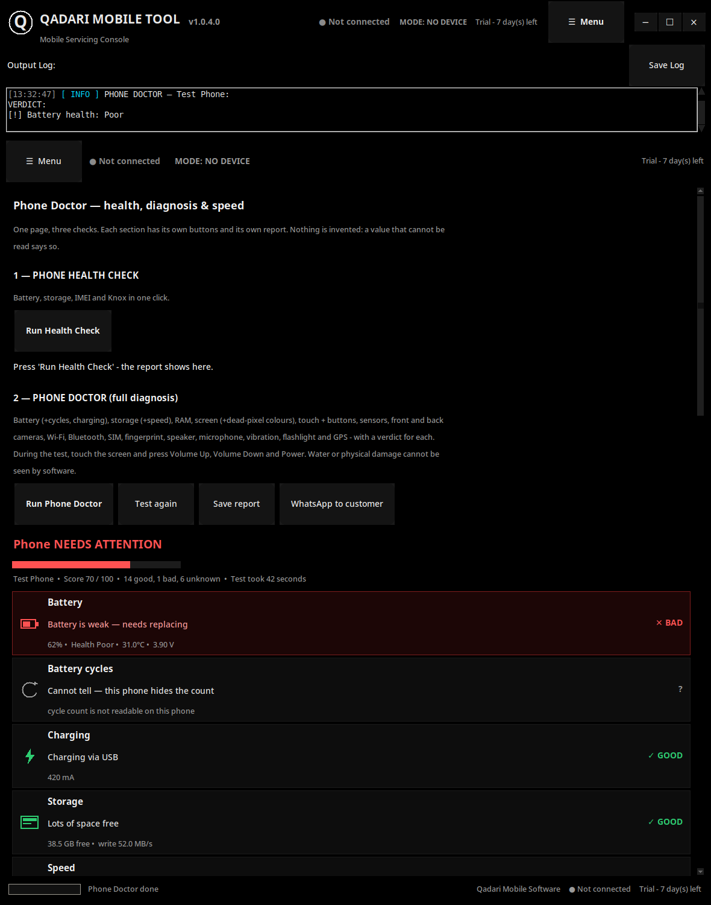

The tool speaks for itself.
Same black console. Same green Ok lines. Now on the web — FRP, MDM, flashing, Phone Doctor and 4,746 supported models. Built for repair shops.
7-day free trial — try it before you pay. No card needed.
Built different — 01 to 08
🩺 Phone Doctor
Full health check in one click: battery, storage speed, memory, screen, touch, sensors, cameras, Wi-Fi, Bluetooth, SIM, fingerprint and GPS. Every item marked GOOD or BAD, with a health score out of 100 and a printable report.
🧹 Debloat
One-click bloatware removal over ADB. Scans the phone, shows only known-safe bloat found, and removes what you choose — with restore.
🔍 Used-Phone Checker
Check a second-hand phone before you buy or sell it: FRP lock, Mi account lock, Samsung KG lock, Knox warranty bit, bootloader status and IMEI — know what is really wrong with it.
🛡️ Fake Detector
Spots fake and clone phones by comparing the real hardware and chipset against the model it claims to be.
📱 Screen Mirror
See the phone screen on your PC while you work on it — no extra app needed on the phone.
🔄 Automatic Updates
New models and new versions arrive automatically on startup — no reinstall, no manual download. Your model list is always current.
🔓 FRP · MDM · Flashing
FRP bypass, MDM/KG removal and flashing for Samsung, MediaTek, Qualcomm and Unisoc — with Brand / Model dropdowns and a clear step-by-step log.
⚙️ All ADB Tools in One Place
Device info, reboot, reset, app install and uninstall, backup and more — every ADB feature in the Android ADB hub.
Made by a shopkeeper, for shopkeepers.
Qadari Mobile Software — Kandahar, Afghanistan. Every feature was built from real shop work, not copied from another tool.
Screenshots
Real screenshots of the actual tool — not mockups.


Supported Models
4,746 supported models — Samsung, Xiaomi, OPPO, vivo, Realme, Huawei, Honor, Motorola, Tecno, OnePlus, Infinix, Nokia and more. Type a model name, code or chipset to search.
Loading model list…
| Brand | Model | Code | Chipset | Features |
|---|---|---|---|---|
| Loading… | ||||
Showing the first 100 matches. Refine your search to narrow the list.
Pricing
Try it first — every license starts with a 7-day free trial. Buy only if it works for you.
3 months
$12
Full access for 3 months
6 months
$20
Full access for 6 months
1 year
$30
Full access for 12 months
License is offline — a simple license key, no server needed. To buy, contact us on WhatsApp or Telegram below.
Honest limits
- Android only — iPhone is not supported.
- Free FRP works only on old security patches (before December 2022). Newer patches may need a paid method.
- EDL flashing needs the correct loader for the phone — some loaders are paid or authorised only.
- Carrier unlock codes come from the carrier, not from this tool.
Contact
Questions, license purchase, or help with the tool:
By Qadari Mobile Software — Kandahar, Afghanistan.